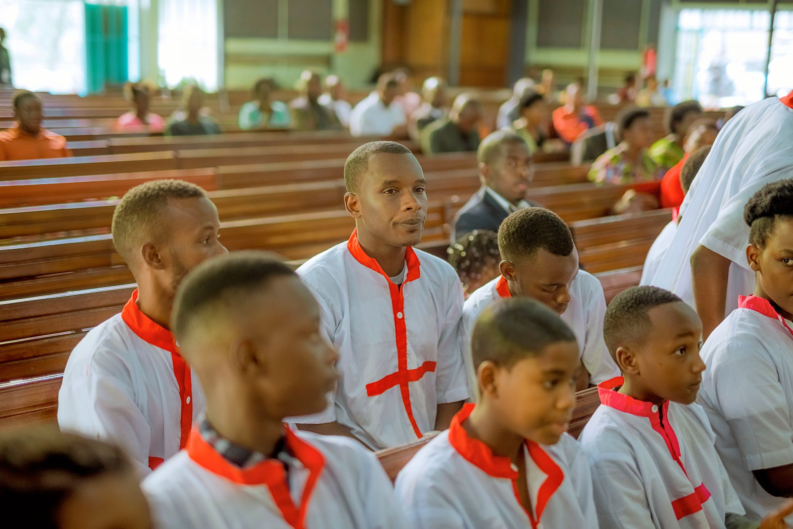

Believing in Him
Receiving Christ and believing in His name — to all who do, He gives the right to become children of God.
Children Of God
Kuruman · Northern Cape
A family in Kuruman, Northern Cape, under the leadership of Pastor Oarabile Dorothy Sefako — believing in Him, becoming like Him, and serving through Him.
Our Foundation
“Yet to all who received Him, to all who believed in His name, He gave the right to become children of God.”
John 1:12
“See what great love the Father has lavished on us, that we should be called children of God!”
1 John 3:1
What we stand for
Receiving Christ and believing in His name — to all who do, He gives the right to become children of God.
Growing in grace and knowledge, allowing God to correct us and lead us towards spiritual maturity.
Going into all nations to make disciples, teaching them to obey all that the Lord Jesus commanded.
Welcome home

We are an ordinary people who have met an extraordinary God. Under the leadership of Pastor Oarabile Dorothy Sefako, Children Of God Ministry exists to see lives grow in the grace and knowledge of our Lord Jesus Christ — in Kuruman and across the community.
Whether you are seeking, searching, or ready to serve, there is a place for you in the family of God. Come as you are.
The Vision
“Rather you must grow in the Grace and knowledge of our Lord and Saviour Jesus Christ. All glory to Him, both now and forever! Amen.”
2 Peter 3:18
This vision is inspired by what the apostle Peter says in 2 Peter 3:18. This verse makes it clear that our vision is not just to reach a certain destiny in terms of material possession or even in the spirit, but rather to continually grow and increase both in the Grace and in the Knowledge about God (Jehovah) towards perfection.
Growing in the Grace means allowing God to rebuke and correct us, to admit to our sins and to repent at all times. When we admit that we are wrong and repent from doing wrong, Jesus's blood cleanses us from that wickedness. Continuing like this brings maturity, and that leads to spiritual excellence.
1 John 1:8-10 · Psalm 51:17
To grow in the knowledge means seeking God's kingdom above everything — to want to know more and more of Him, studying the Word of God continually. This is the only way for us to be able to fully obey God. By so doing, all these things will be given to us as well by God, and we will be prosperous and successful in everything we do.
Joshua 1:8 · Psalm 1:1
The Mission
“To go and make disciples of all nations, baptising them in the name of the Father and the Son and the Holy Spirit. To teach these new disciples to obey all the commands that the Lord Jesus have given us.”
Matthew 28:19-20
“We use God's mighty weapons, the Word of God (Ephesians 6:17), not worldly weapons, to knock down strongholds of human reasoning and to destroy false arguments. We destroy every proud obstacle that keeps people from knowing God, we capture their rebellious thoughts and teach them to obey Christ.”
2 Corinthians 10:4-5
Life at Children Of God


Our Beliefs
Everything we hold to is grounded in the Word of God, our only foundation for faith and life.
To all who received Him, to all who believed in His name, He gave the right to become children of God. This is the heart of who we are.
John 1:12
We allow God to rebuke and correct us, admitting our sins and repenting at all times. Jesus's blood cleanses us, bringing maturity and spiritual excellence.
James 1:8-10 · Psalm 51:17
We seek God's kingdom above everything, studying His Word continually so that we may fully obey Him and be prosperous in all we do.
Matthew 6:19-34 · Joshua 1:8
We use God's mighty weapons — the Word of God — to knock down strongholds of human reasoning and capture every thought to obey Christ.
Ephesians 6:17 · 2 Corinthians 10:4-5
Times & connect
There is a place for you in the family of God. Reach out, join a gathering, or send us a message.
◆
Kuruman, Northern Cape.
Contact us for the address of our next gathering.
Our Foundation
“Yet to all who received Him, to all who believed in His name, He gave the right to become children of God.”
John 1:12
We would love to hear from you and pray with you. Speak to us after a gathering, or reach out through World Development Fund.
This Sunday
Whether you are seeking, searching, or ready to serve, there is a place for you in the family of God.
Give
Every gift helps keep the doors open and the outreach moving in Kuruman. Thank you for sowing into what God is doing here.